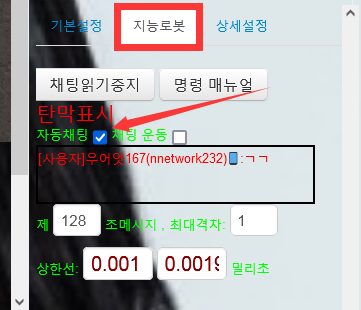
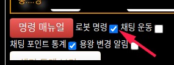
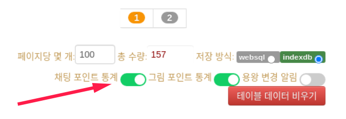

명령줄을 사용하려면 메시지 읽기 기능을 켜고 자동 채팅 확인란을 선택해야 합니다
1.2-mv2/v2.2-mv2기본적으로 선택 안 됨,수동 활성화 필요.(그림1)
3.1.1-mv3/3.1.1-mv3-emoji/3.2.1-mv3/3.2.1-mv3-emoji 기본적으로 선택됨,수동으로 사용할 필요 없음.(그림1)
v3.1.3/v3.2.3 버전 이후 기계 명령으로 이름 변경, 기본 열기.(그림2)


×
주의사항!
대량 발송이나 채팅 로봇을 사용하면 권한 계정이 여러 번 내용을 발송할 수 있는 권한을 가지고 있는지 확인하십시오. 본 확장은
공식적인 제한을 빙빙 돌려서 하는 것이 아니라 수동 입력만
시뮬레이션합니다.
새 버전은 이전 버전의 모든 명령을 호환합니다.
3.1.5-mv3-websql&indexdb/3.2.5-mv3-websql&indexdb
수정 명령
게임 포인트 명령
주사위의 점수 차는 승부의 점수이다.주사위 명령을 사용할 때마다 랜덤이 생성되며 실제 점수는 승부의 점수에 랜덤으로 생성된 배수를 곱합니다 (배수 최대치는 요일).예를 들어 월요일은 승부의 점수에 랜덤배수(최소 1배, 최대 1배)를 곱한다... 일요일은 승부의 점수에 랜덤배수(최소 1배, 최대 7배)를 곱한다.
3.1.4-mv3-websql&indexdb/3.2.4-mv3-websql&indexdb 추가 명령
게임 포인트 명령:
게임 규칙:
!주사위 = !🎲:주사위 세 개를 굴려서 BJ와 크기를 맞추는 거예요.
!주사위1-9:1-9개의 주사위를 던져 BJ와 크기를 비교하고, 숫자는 주사위를 던진 수량을 나타내며, 최소 1개를 던져 가장 많고, 9개를 던진다
승패 결산:주사위의 점수 차는 승패의 점수입니다.실제 승패 점수는 승패 점수 곱하기 5.
채팅 포인트 통계 조회 명령:
!총포인트:총 채팅 포인트 조회!
!총횟수:총 채팅 횟수 조회!
!게임포인트:오늘 게임 통계점 조회!
!채팅포인트:오늘 채팅 포인트 조회!
!채팅횟수:오늘 채팅 횟수 조회!
!채팅통계 = !채팅통계조회:오늘 채팅 횟수,오늘 채팅 포인트, 오늘 게임 포인트, 총 채팅 포인트, 총 채팅 횟수 조회!
!포인트ace = !채팅포인트ace = !용왕 = !ace:오늘의 채팅 포인트 1위 조회.
!횟수ace = !채팅횟수ace:오늘의 채팅 횟수 1위 조회.
!게임ace = !게임포인트ace:오늘의 게임 포인트 1위 조회.
!총포인트ace = !총채팅포인트ace:총 채팅 포인트 1위 조회.
!총횟수ace = !총채팅횟수ace:총 채팅 횟수 1위 조회.
X
주의사항!
채팅 포인트 통계 조회 명령을 사용하려면 반드시 채팅 포인트 통계 기능을 켜야 한다.

시간 관련 명령:
!방송시간:방송 시간 조회.
목록 레이아웃이 업데이트되었습니다. 이 명령은 유효하지 않습니다.
관중 추첨 명령:
!매니저 = !추첨매니저:생방송 시청자 목록에서 무작위로 매니저를 뽑습니다.
!열혈팬 = !추첨열혈팬:생방송 시청자 목록에서 무작위로 열혈팬를 뽑습니다.
!구독자 = !추첨구독자:생방송 시청자 목록에서 무작위로 구독자를 뽑습니다.
!추첨서포터:생방송 시청자 목록에서 무작위로 서포터를 뽑습니다.
!팬 = !추첨팬:생방송 시청자 목록에서 무작위로 팬를 뽑습니다.
!일반참여자 = !추첨일반참여자 = !사용자:생방송 시청자 목록에서 무작위로 일반참여자를 뽑습니다.
채팅방 조회 명령:
!문지기수:매니저 수량 조회
메시지 보내기 명령：
!once = !딱한번 = !극한길이 = !ultimatelength = !long = !极限长度：세로로 된 유니코드 긴 줄 보내기
!가리다 = !막다 = !덮어쓰다:덮어쓰는 화성문 차단 문자 보내기
'̴̵̶̷̸̡̢̧̨̛̖̗̘̙̠̣̤̥̦̩̰̱̲̳̹͇͈͉͓͔͕͖͙̜̝̞̟̪̫̬̭̮̯̺̻̼͍͎̀́̂̃̄̅̆̇̈̉̐̑̒̓̔̀́͂̓̈́͆͐͑͒͗̊̋̌̍̎̏̽̾̿͊͋͌̕͘̚͠ͅ͏͚͛ͪͫͬͭͮͯ͜͟͝͞''̴̵̶̷̸̡̢̧̨̛̖̗̘̙̠̣̤̥̦̩̰̱̲̳̹͇͈͉͓͔͕͖͙̜̝̞̟̪̫̬̭̮̯̺̻̼͍͎̀́̂̃̄̅̆̇̈̉̐̑̒̓̔̀́͂̓̈́͆͐͑͒͗̊̋̌̍̎̏̽̾̿͊͋͌̕͘̚͠ͅ͏͚͛ͪͫͬͭͮͯ͜͟͝͞''̴̵̶̷̸̡̢̧̨̛̖̗̘̙̠̣̤̥̦̩̰̱̲̳̹͇͈͉͓͔͕͖͙̜̝̞̟̪̫̬̭̮̯̺̻̼͍͎̀́̂̃̄̅̆̇̈̉̐̑̒̓̔̀́͂̓̈́͆͐͑͒͗̊̋̌̍̎̏̽̾̿͊͋͌̕͘̚͠ͅ͏͚͛ͪͫͬͭͮͯ͜͟͝͞''̴̵̶̷̸̡̢̧̨̛̖̗̘̙̠̣̤̥̦̩̰̱̲̳̹͇͈͉͓͔͕͖͙̜̝̞̟̪̫̬̭̮̯̺̻̼͍͎̀́̂̃̄̅̆̇̈̉̐̑̒̓̔̀́͂̓̈́͆͐͑͒͗̊̋̌̍̎̏̽̾̿͊͋͌̕͘̚͠ͅ͏͚͛ͪͫͬͭͮͯ͜͟͝͞''̴̵̶̷̸̡̢̧̨̛̖̗̘̙̠̣̤̥̦̩̰̱̲̳̹͇͈͉͓͔͕͖͙̜̝̞̟̪̫̬̭̮̯̺̻̼͍͎̀́̂̃̄̅̆̇̈̉̐̑̒̓̔̀́͂̓̈́͆͐͑͒͗̊̋̌̍̎̏̽̾̿͊͋͌̕͘̚͠ͅ͏͚͛ͪͫͬͭͮͯ͜͟͝͞''̴̵̶̷̸̡̢̧̨̛̖̗̘̙̠̣̤̥̦̩̰̱̲̳̹͇͈͉͓͔͕͖͙̜̝̞̟̪̫̬̭̮̯̺̻̼͍͎̀́̂̃̄̅̆̇̈̉̐̑̒̓̔̀́͂̓̈́͆͐͑͒͗̊̋̌̍̎̏̽̾̿͊͋͌̕͘̚͠ͅ͏͚͛ͪͫͬͭͮͯ͜͟͝͞''̴̵̶̷̸̡̢̧̨̛̖̗̘̙̠̣̤̥̦̩̰̱̲̳̹͇͈͉͓͔͕͖͙̜̝̞̟̪̫̬̭̮̯̺̻̼͍͎̀́̂̃̄̅̆̇̈̉̐̑̒̓̔̀́͂̓̈́͆͐͑͒͗̊̋̌̍̎̏̽̾̿͊͋͌̕͘̚͠ͅ͏͚͛ͪͫͬͭͮͯ͜͟͝͞''̴̵̶̷̸̡̢̧̨̛̖̗̘̙̠̣̤̥̦̩̰̱̲̳̹͇͈͉͓͔͕͖͙̜̝̞̟̪̫̬̭̮̯̺̻̼͍͎̀́̂̃̄̅̆̇̈̉̐̑̒̓̔̀́͂̓̈́͆͐͑͒͗̊̋̌̍̎̏̽̾̿͊͋͌̕͘̚͠ͅ͏͚͛ͪͫͬͭͮͯ͜͟͝͞''̴̵̶̷̸̡̢̧̨̛̖̗̘̙̠̣̤̥̦̩̰̱̲̳̹͇͈͉͓͔͕͖͙̜̝̞̟̪̫̬̭̮̯̺̻̼͍͎̀́̂̃̄̅̆̇̈̉̐̑̒̓̔̀́͂̓̈́͆͐͑͒͗̊̋̌̍̎̏̽̾̿͊͋͌̕͘̚͠ͅ͏͚͛ͪͫͬͭͮͯ͜͟͝͞''̴̵̶̷̸̡̢̧̨̛̖̗̘̙̠̣̤̥̦̩̰̱̲̳̹͇͈͉͓͔͕͖͙̜̝̞̟̪̫̬̭̮̯̺̻̼͍͎̀́̂̃̄̅̆̇̈̉̐̑̒̓̔̀́͂̓̈́͆͐͑͒͗̊̋̌̍̎̏̽̾̿͊͋͌̕͘̚͠ͅ͏͚͛ͪͫͬͭͮͯ͜͟͝͞''̴̵̶̷̸̡̢̧̨̛̖̗̘̙̠̣̤̥̦̩̰̱̲̳̹͇͈͉͓͔͕͖͙̜̝̞̟̪̫̬̭̮̯̺̻̼͍͎̀́̂̃̄̅̆̇̈̉̐̑̒̓̔̀́͂̓̈́͆͐͑͒͗̊̋̌̍̎̏̽̾̿͊͋͌̕͘̚͠ͅ͏͚͛ͪͫͬͭͮͯ͜͟͝͞''̴̵̶̷̸̡̢̧̨̛̖̗̘̙̠̣̤̥̦̩̰̱̲̳̹͇͈͉͓͔͕͖͙̜̝̞̟̪̫̬̭̮̯̺̻̼͍͎̀́̂̃̄̅̆̇̈̉̐̑̒̓̔̀́͂̓̈́͆͐͑͒͗̊̋̌̍̎̏̽̾̿͊͋͌̕͘̚͠ͅ͏͚͛ͪͫͬͭͮͯ͜͟͝͞''̴̵̶̷̸̡̢̧̨̛̖̗̘̙̠̣̤̥̦̩̰̱̲̳̹͇͈͉͓͔͕͖͙̜̝̞̟̪̫̬̭̮̯̺̻̼͍͎̀́̂̃̄̅̆̇̈̉̐̑̒̓̔̀́͂̓̈́͆͐͑͒͗̊̋̌̍̎̏̽̾̿͊͋͌̕͘̚͠ͅ͏͚͛ͪͫͬͭͮͯ͜͟͝͞''̴̵̶̷̸̡̢̧̨̛̖̗̘̙̠̣̤̥̦̩̰̱̲̳̹͇͈͉͓͔͕͖͙̜̝̞̟̪̫̬̭̮̯̺̻̼͍͎̀́̂̃̄̅̆̇̈̉̐̑̒̓̔̀́͂̓̈́͆͐͑͒͗̊̋̌̍̎̏̽̾̿͊͋͌̕͘̚͠ͅ͏͚͛ͪͫͬͭͮͯ͜͟͝͞''̴̵̶̷̸̡̢̧̨̛̖̗̘̙̠̣̤̥̦̩̰̱̲̳̹͇͈͉͓͔͕͖͙̜̝̞̟̪̫̬̭̮̯̺̻̼͍͎̀́̂̃̄̅̆̇̈̉̐̑̒̓̔̀́͂̓̈́͆͐͑͒͗̊̋̌̍̎̏̽̾̿͊͋͌̕͘̚͠ͅ͏͚͛ͪͫͬͭͮͯ͜͟͝͞''̴̵̶̷̸̡̢̧̨̛̖̗̘̙̠̣̤̥̦̩̰̱̲̳̹͇͈͉͓͔͕͖͙̜̝̞̟̪̫̬̭̮̯̺̻̼͍͎̀́̂̃̄̅̆̇̈̉̐̑̒̓̔̀́͂̓̈́͆͐͑͒͗̊̋̌̍̎̏̽̾̿͊͋͌̕͘̚͠ͅ͏͚͛ͪͫͬͭͮͯ͜͟͝͞''̴̵̶̷̸̡̢̧̨̛̖̗̘̙̠̣̤̥̦̩̰̱̲̳̹͇͈͉͓͔͕͖͙̜̝̞̟̪̫̬̭̮̯̺̻̼͍͎̀́̂̃̄̅̆̇̈̉̐̑̒̓̔̀́͂̓̈́͆͐͑͒͗̊̋̌̍̎̏̽̾̿͊͋͌̕͘̚͠ͅ͏͚͛ͪͫͬͭͮͯ͜͟͝͞''̴̵̶̷̸̡̢̧̨̛̖̗̘̙̠̣̤̥̦̩̰̱̲̳̹͇͈͉͓͔͕͖͙̜̝̞̟̪̫̬̭̮̯̺̻̼͍͎̀́̂̃̄̅̆̇̈̉̐̑̒̓̔̀́͂̓̈́͆͐͑͒͗̊̋̌̍̎̏̽̾̿͊͋͌̕͘̚͠ͅ͏͚͛ͪͫͬͭͮͯ͜͟͝͞''̴̵̶̷̸̡̢̧̨̛̖̗̘̙̠̣̤̥̦̩̰̱̲̳̹͇͈͉͓͔͕͖͙̜̝̞̟̪̫̬̭̮̯̺̻̼͍͎̀́̂̃̄̅̆̇̈̉̐̑̒̓̔̀́͂̓̈́͆͐͑͒͗̊̋̌̍̎̏̽̾̿͊͋͌̕͘̚͠ͅ͏͚͛ͪͫͬͭͮͯ͜͟͝͞'
3.1.1-mv3/3.1.1-mv3-emoji/3.2.1-mv3/3.2.1-mv3-emoji 추가 명령
게임 명령：
!탑 = !top:랜덤으로 탑 영웅을 선정하여 발송
!정글 = !jun = !jungle:랜덤으로 정글 영웅을 선정하여 발송
!미드 = !mid = !middle = !ap:랜덤으로 미드 영웅을 선정하여 발송
!바텀 = !ad = !adc:랜덤으로 바텀 영웅을 선정하여 발송
!서포터 = !sup = !support:랜덤으로 서포터 영웅을 선정하여 발송
!임의 = !모든 = !any = !all:랜덤으로 임의의 영웅을 선정하여 발송
1.2-mv2/v2.2-mv2모든 명령
웹 명령：
!재부팅 = !reboot = !reload = !restart:현재 웹 페이지 새로 고침 다시 로드
생방송 간 명령：
!보내다 = !send = !发送 = !보내기：
이 명령을 보내는 사람, 닉네임 + 이 명령 메시지
!용감해지다：짧은 줄 보내기'̀̀̀̀̀̀̀̀̀̀̀̀̀̀̀̀̀̀̀̀̀̀̀̀̀̀̀̀̀̀̀̀̀̀̀̀̀̀̀̀̀̀̀̀̀̀̀̀̀̀̀̀̀̀̀̀̀̀̀ͯ'
!웅기하다：긴 줄 보내기'̀̀̀̀̀̀̀̀̀̀̀̀̀̀̀̀̀̀̀̀̀̀̀̀̀̀̀̀̀̀̀̀̀̀̀̀̀̀̀̀̀̀̀̀̀̀̀̀̀̀̀̀̀̀̀̀̀̀̀̀̀̀̀̀̀̀̀̀̀̀̀̀̀̀̀̀̀̀̀̀̀̀̀̀̀̀̀̀̀̀̀̀̀̀̀̀̀̀̀̀̀̀̀̀̀̀̀̀̀̀̀̀̀̀̀̀̀̀̀̀̀̀̀̀̀̀̀̀̀̀̀̀̀̀̀̀̀̀̀̀̀̀̀̀̀̀̀̀̀̀̀̀̀̀̀̀̀̀̀̀̀̀̀̀̀̀̀̀̀̀̀̀̀̀̀̀̀̀̀̀̀̀̀̀̀̀̀̀̀̀̀̀̀̀̀̀̀̀̀̀̀̀̀̀̀̀̀̀̀̀̀̀̀̀̀̀̀̀̀̀̀̀̀̀̀̀̀̀̀̀̀̀̀̀̀̀̀̀̀̀̀̀̀̀̀̀̀̀̀̀̀̀̀̀̀̀̀̀̀̀̀̀̀̀̀̀ͯ'
목록 레이아웃이 업데이트되었습니다. 이 명령은 유효하지 않습니다.
!문지기 = !슈퍼팬 = !문지기목록:현재 생방송 중인 매니저의 닉네임 + id를 집계하여 번호로 표시하여 발송합니다
!극한길이 = !ultimatelength = !long = !极限长度："̨̨̨̨̨̨̨̨̨̨̨̨̨̨̨̨̨̨̨̨̨̨̨̨̨̨̨̨̨̨̨̨̨̨̨̨̨̨̨̨̨̨̨̨̨̨̨̨̨̨̨̨̨̨̨̨̨̨̨̨̨̨̨̨̨̨̨̨̨̨̨̨̨̨̨̨̨̨̨̨̨̨̨̨̨̨̨̨̨̨̨̨̨̨̨̨̨̨̨̨̨̨̨̨̨̨̨̨̨̨̨̨̨̨̨̨̨̨̨̨̨̨̨̨̨̨̨̨̨̨̨̨̨̨̨̨̨̨̨̨̨̨̨̨̨̨̨̨̨̨̨̨̨̨̨̨̨̨̨̨̨̨̨̨̨̨̨̨̨̨̨̨̨̨̨̨̨̨̨̨̨̨̨̨̨̨̨̨̨̨̨̨̨̨̨̨̨̨̨̨̨̨̨̨̨̨̨̨̨̨̨̨̨̨̨̨̨̨̨̨̨̨̨̨̨̨̨̨̨̨̨̨̨̨̨̨̨̨̨̨̨̨̨̨̨̨̨̨̨̨̨̨̨̨̨̨̨̨̨̨̨̨̨̨̨̨̨̨̨̨̨̨̨̨̨̨̨̨̨̨̨̨̨̨̨̨̨̨̨̨̨̨̨̨̨̨̨̨̨̨̨̨̨̨̨̨̨̨̨̨̨̨̨̨̨̨̨̨̨̨̨̨̨̨̨̨̨̨̨̨̨̨̨̨̨̨̨̨̨̨̨̨̨̨̨̨̨̨̨̨̨̨̨̨̨̨̨̨̨̨̨̨̨̨̨̨̨̨̨̨̨̨̨̨̨̨̨̨̨̨̨̨̨̨̨̨̨̨̨̨̨̨̨̨̨̨̭̤̩͚̭̤̩͚̭̤̩͚̭̤̩͚̭̤̩͚̭̤̩͚̭̤̩͚̭̤̩͚̭̤̩͚̭̤̩͚̭̤̩͚̭̤̩͚̭̤̩͚̭̤̩͚̭̤̩͚̭̤̩͚̭̤̩͚̭̤̩͚̭̤̩͚̭̤̩͚̭̤̩͚̭̤̩͚̭̤̩͚̭̤̩͚̭̤̩͚̭̤̩͚̭̤̩͚̭̤̩͚̭̤̩͚̭̤̩͚̭̤̩͚̭̤̩͚̭̤̩͚̭̤̩͚̭̤̩͚̭̤̩͚̭̤̩͚̭̤̩͚̭̤̩͚̭̤̩͚̭̤̩͚̭̤̩͚̭̤̩͚̭̤̩͚̭̤̩͚̭̤̩͚̭̤̩͚̭̤̩͚̭̤̩͚̭̤̩͚̭̤̩͚̭̤̩͚̭̤̩͚̭̤̩͚̭̤̩͚̭̤̩͚̭̤̩͚̭̤̩͚̭̤̩͚̭̤̩͚̭̤̩͚̭̤̩͚̭̤̩͚̭̤̩͚̭̤̩͚̭̤̩͚̭̤̩͚̭̤̩͚̭̤̩͚̭̤̩͚̭̤̩͚̭̤̩͚̭̤̩͚̭̤̩͚̭̤̩͚̭̤̩͚̭̤̩͚̭̤̩͚̭̤̩͚̭̤̩͚̭̤̩͚̭̤̩͚̭̤̩͚̭̤̩͚̭̤̩͚̭̤̩͚̭̤̩͚̭̤̩͚̭̤̩͚̭̤̩͚̭̤̩͚̭̤̩͚̭̤̩͚̭̤̩͚̭̤̩͚̭̤̩͚̭̤̩͚̭̤̩͚̭̤̩͚̭̤̩͚̭̤̩͚̭̤̩͚̭̤̩͚̭̤̩͚̭̤̩͚̭̤̩͚̭̤̩͚̭̤̩͚̭̤̩͚̭̤̩͚̭̤̩͚̭̤̩͚̭̤̩͚̭̤̩͚̭̤̩͚̭̤̩͚̭̤̩͚̭̤̩͚̭̤̩͚̭̤̩͚̭̤̩͚̭̤̩͚̭̤̩͚̭̤̩͚̭̤̩͚̭̤̩͚̭̤̩͚̭̤̩͚̭̤̩͚̭̤̩͚̭̤̩͚̭̤̩͚̭̤̩͚̭̤̩͚̭̤̩͚̭̤̩͚̭̤̩͚̭̤̩͚̭̤̩͚̭̤̩͚̭̤̩͚̭̤̩͚̭̤̩͚̭̤̩͚̭̤̩͚̭̤̩͚̭̤̩͚̭̤̩͚̭̤̩͚̭̤̩͚̭̤̩͚̭̤̩͚̭̤̩͚̭̤̩͚̭̤̩͚̭̤̩͚̭̤̩͚̭̤̩͚̭̤̩͚̭̤̩͚̭̤̩͚̭̤̩͚̭̤̩͚̭̤̩͚̭̤̩͚̭̤̩͚̭̤̩͚̭̤̩͚̭̤̩͚̭̤̩͚̭̤̩͚̭̤̩͚̭̤̩͚̭̤̩͚̭̤̩͚̭̤̩͚̭̤̩͚̭̤̩͚̭̤̩͚̭̤̩͚̭̤̩͚̭̤̩͚̭̤̩͚̭̤̩͚̭̤̩͚̭̤̩͚̭̤̩͚̭̤̩͚̭̤̩͚̭̤̩͚̭̤̩͚̭̤̩͚̭̤̩͚̭̤̩͚̭̤̩͚̭̤̩͚̭̤̩͚̭̤̩͚̭̤̩͚̭̤̩͚̭̤̩͚̭̤̩͚̭̤̩͚̭̤̩͚̭̤̩͚̭̤̩͚̭̤̩͚̭̤̩͚̭̤̩͚̭̤̩͚̭̤̩͚̭̤̩͚̭̤̩͚̭̤̩͚̭̤̩͚̭̤̩͚̭̤̩͚̭̤̩͚̭̤̩͚̭̤̩͚̭̤̩͚̭̤̩͚̭̤̩͚̭̤̩͚̭̤̩͚̭̤̩͚̭̤̩͚̭̤̩͚̭̤̩͚̭̤̩͚̭̤̩͚̭̤̩͚̭̤̩͚̭̤̩͚̭̤̩͚̭̤̩͚̭̤̩͚̭̤̩͚̭̤̩͚̭̤̩͚̭̤̩͚̭̤̩͚̭̤̩͚̭̤̩͚̭̤̩͚̭̤̩͚̭̤̩͚̭̤̩͚̭̤̩͚̭̤̩͚̭̤̩͚̭̤̩͚̭̤̩͚̭̤̩͚̭̤̩͚̭̤̩͚̭̤̩͚̭̤̩͚̭̤̩͚̭̤̩͚̭̤̩͚̭̤̩͚̭̤̩͚̭̤̩͚̭̤̩͚̭̤̩͚̭̤̩͚̭̤̩͚̭̤̩͚̭̤̩͚̭̤̩͚̭̤̩͚̭̤̩͚̭̤̩͚̭̤̩͚̭̤̩͚̭̤̩͚̭̤̩͚̭̤̩͚̭̤̩͚̭̤̩͚̭̤̩͚̭̤̩͚̭̤̩͚̭̤̩͚̭̤̩͚̭̤̩͚̭̤̩͚̭̤̩͚̭̤̩͚̭̤̩͚̭̤̩͚̭̤̩͚̭̤̩͚̭̤̩͚̭̤̩͚̭̤̩͚̭̤̩͚̭̤̩͚̭̤̩͚̭̤̩͚̭̤̩͚̭̤̩͚̭̤̩͚̭̤̩͚̭̤̩͚̭̤̩͚̭̤̩͚̭̤̩͚̭̤̩͚̭̤̩͚̭̤̩͚̭̤̩͚̭̤̩͚̭̤̩͚̭̤̩͚̭̤̩͚̭̤̩͚̭̤̩͚̭̤̩͚̭̤̩͚̭̤̩͚̭̤̩͚̭̤̩͚̭̤̩͚̭̤̩͚̭̤̩͚̭̤̩͚̭̤̩͚̭̤̩͚̭̤̩͚̭̤̩͚̭̤̩͚̭̤̩͚̭̤̩͚̭̤̩͚̭̤̩͚̭̤̩͚̭̤̩͚̭̤̩͚̭̤̩͚̭̤̩͚̭̤̩͚̭̤̩͚̭̤̩͚̭̤̩͚̭̤̩͚̭̤̩͚̭̤̩͚̭̤̩͚̭̤̩͚̭̤̩͚̭̤̩͚̭̤̩͚̭̤̩͚̭̤̩͚̭̤̩͚̭̤̩͚̭̤̩͚̭̤̩͚̭̤̩͚̭̤̩͚̭̤̩͚̭̤̩͚̭̤̩͚̭̤̩͚̭̤̩͚̭̤̩͚̭̤̩͚̭̤̩͚̭̤̩͚̭̤̩͚̭̤̩͚̭̤̩͚̭̤̩͚̭̤̩͚̭̤̩͚͚̭̤̩͚̭̤̩͚̭̤̩͚̭̤̩͚̭̤̩͚̭̤̩͚̭̤̩͚͚̭̤̩͚̭̤̩͚̭̤̩͚̭̤̩͚̭̤̩͚̭̤̩͚̭̤̩͚͚̭̤̩͚̭̤̩͚̭̤̩͚̭̤̩͚̭̤̩͚௵"유니코드의 긴 선 보내기
!text:컨 텐:컨텐츠 한 번 보내기
!text:컨 텐,횟수x간격:
예를 들어 두 번 보내기 1,
!text:1,2x0.1:간격이 0.1인 메시지를 두 번 보냅니다.
x는 알파벳 X，격식은 엄격히 따른다
!멈추다 = !stop:만약 대량 간격이 너무 길면, 이 명령을 사용하여 내용을 계속 보내는 것을 정지합니다
!채팅속도 = !지연속도 = !속도:현재 생방송 채팅 속도와 시청자 수 발송
!별 = !즐겨찾기：모음집 지금 보고 있어요.
!UP = !좋아요 = !좋아：현재 방송국 좋아요 누르기.
시간 관련 명령:
!보고시간= !시간= !time:현재 시간
!방송시작시간:브로드캐스트 시작 시간 보내기
테스트 중인 명령(이 계획된 명령은 이전 버전에서 버그가 있을 수 있으며 적시에 업데이트되지 않을 수 있습니다.):
계획 중인 명령: